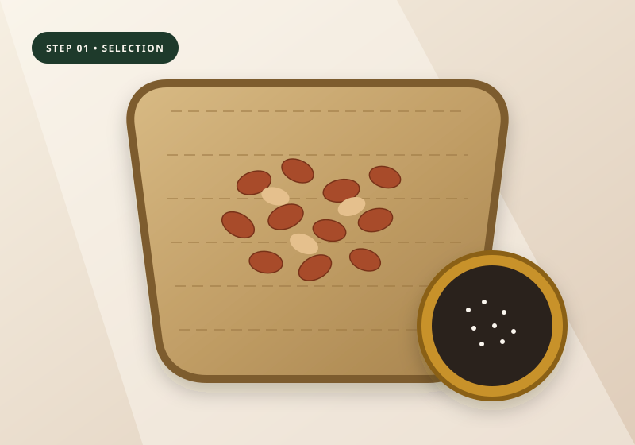
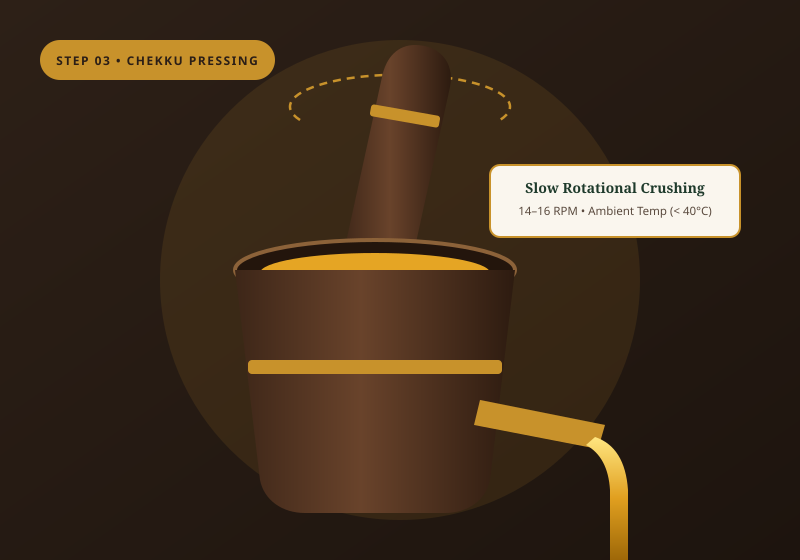
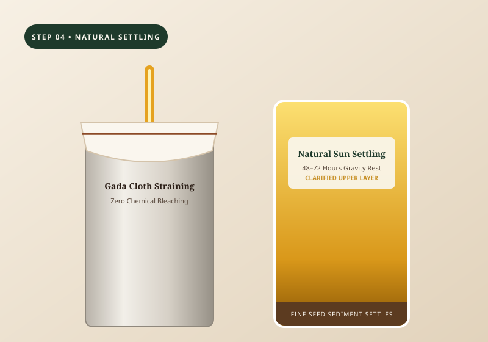

Red-Skin Dryland Groundnuts
KadalaiPlump, sun-cured peanut kernels shelled shortly before pressing to prevent rancidity and deliver a rich, roasted-nut culinary aroma.
Long before industrial expellers and solvent refineries existed, South Indian oil mills relied on the rhythmic turn of the wooden marachekku. At MARACHEKKU NATURALS, we honour that unhurried discipline—pressing Pure Oils with Honest Traditions.
In modern commercial oil processing, oilseeds are crushed in high-speed steel expellers that generate intense friction heat, followed by chemical solvent washes, alkaline neutralisation, and high-temperature deodorising.
The result is a colourless, odourless liquid stripped of the seed's natural character. At MARACHEKKU NATURALS, our commitment is to preserve the integrity of traditional cold-pressing without shortcuts.
The quality of cold-pressed oil is determined before the press even begins to turn. Because we do not refine or deodorise our oils, we select only clean, sun-cured first-grade seeds.
Plump, sun-cured peanut kernels shelled shortly before pressing to prevent rancidity and deliver a rich, roasted-nut culinary aroma.
Thoroughly winnowed gingelly seeds crushed with a small measure of traditional palm jaggery (karupatti) for authentic Nallennai body.
Mature coconut halves dried naturally on courtyard reed mats without chemical sulfur smoke, yielding a sweet, crystal-clear oil.
Bold yellow and black mustard seeds, mottled castor beans, sweet almonds, and dried neem seeds pressed in dedicated wooden mortars.
An editorial look at the three defining stages inside our mill room—and why we refuse to rush them.

Even a handful of damp or broken seeds can cloud an entire batch of oil. Our team manually winnows every sack in bamboo muram trays and spreads the seeds under natural morning sunlight before loading the press.

Inside the carved vagai-wood mortar, the heavy wooden pestle slowly rolls against the walls at 14–16 RPM. As the seeds compress, golden oil seeps through the wooden channel while the dry seed cake (punnakku) binds together.

Rather than forcing oil through high-pressure chemical filter presses, we pour freshly extracted oil through unbleached cotton cloth into stainless settling drums for 48 to 72 hours of quiet gravity clarification.
From daily culinary staples to specialty household and lamp oils—each pressed in small batches and available in glass bottles or bulk tins.
A factual comparison between our wooden chekku extraction approach and conventional industrial oil processing.
| Production Stage | Marachekku Naturals (Wooden Chekku) | Conventional Refined Oil |
|---|---|---|
| Pressing Chamber | Seasoned Vagai-wood mortar & pestle (14–16 RPM) | High-speed steel screw expellers & solvent baths |
| Extraction Temperature | Ambient room temperature (no external heating) | High-temperature conditioning & steam deodorising |
| Clarification Method | Unbleached cotton cloth & 48–72 hr gravity settling | Chemical degumming, alkali neutralising & bleaching earth |
| Aroma, Colour & Body | Natural seed aroma, rich golden hue & full culinary body | Neutralised odour, pale stripped colour & thin viscosity |